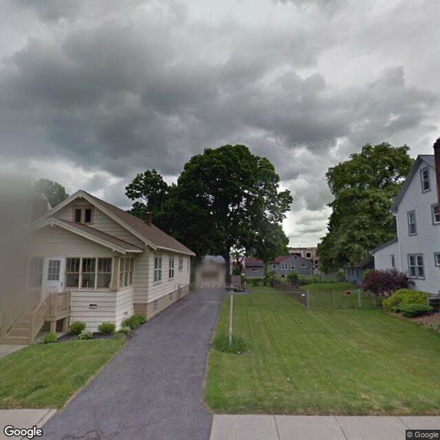

Property entry
126 Martin St
Published 2026-09-20T05:03:02+00:00
Parcel key: 004-14-220

City records
Matches use parcel IDs, normalized addresses, or nearby coordinates. Confirm a match against the source record before relying on it. Publication dates are not source-data dates.
Vacant properties 0
No matches stored for this feed. The feed or address matching may be incomplete; this is not confirmation that no records exist.
Rental registry 0
No matches stored for this feed. The feed or address matching may be incomplete; this is not confirmation that no records exist.
Code violations 0
No matches stored for this feed. The feed or address matching may be incomplete; this is not confirmation that no records exist.
Unfit properties 0
No matches stored for this feed. The feed or address matching may be incomplete; this is not confirmation that no records exist.
AI image observations (unverified)
These observations are generated from an image, not an inspection or an official code finding. No human verification is recorded here.
Image capture date: Not recorded. The entry publication date does not establish the age of the image.
Automated image description
The visible exterior of the property appears to be a single-family home with some areas of discoloration on the roof, siding, and foundation, and wear on the porch steps.
Property type guess: single_family
Visible conditions
- The property features a single-story structure with a visible attic gable.
- The roof appears to be covered with asphalt shingles, showing some visible staining or discoloration.
- The exterior siding is light-colored, possibly vinyl or painted wood, with some visible dirt or staining, particularly on lower sections.
- Windows appear to be intact, and the front entry includes a wooden porch with steps.
- The foundation wall shows noticeable discoloration or staining.
- The yard features a mowed lawn and some foundation plantings and shrubs.
- A paved driveway runs alongside the house.
Condition scores
- Roof
- fair
- Siding Or Facade
- fair
- Windows Doors
- good
- Porch Or Entry
- fair
- Yard Or Lot
- good
- Trash Debris
- none_visible
- Vegetation Overgrowth
- none_visible
Visible flags
- Boarded Windows Or Doors
- no
- Fire Damage Visible
- no
- Structural Damage Visible
- no
- Vacancy Signs Visible
- no
- Active Construction Visible
- no
Possible image-only flags
- Visible staining or discoloration on the roof shingles.
- Visible discoloration or dirt on the exterior siding.
- Noticeable discoloration or staining on the foundation wall.
- Wear and discoloration observed on the wooden porch steps.
AI review boxes
- Roof staining/discoloration: Visible dark staining or discoloration on the asphalt shingles of the main roof slope.
- Siding discoloration/staining: Visible dirt or staining on the light-colored siding, particularly on lower sections and around the porch area.
- Foundation discoloration: Noticeable discoloration or staining on the visible foundation wall along the base of the house.
- Porch step wear: The wooden steps leading to the porch show signs of wear and discoloration.
Review reasons
- Possible image-only issue
Image quality
- Available
- True
- Bytes
- 57496
- Needs Rerun
- False
ACS tract context
Census Tract 3; Onondaga County; New York
- Total population
- 1606
- Median household income
- 74716
- Poverty rate
- 18.7
- Housing units
- 708
- Vacancy rate
- 6.6
- Renter-occupied share
- 64.3
- Median gross rent
- 110100
OpenStreetMap nearby
meter search radius
OpenStreetMap lookup failed: HTTP Error 406: Not Acceptable